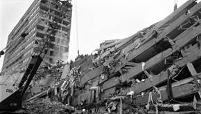
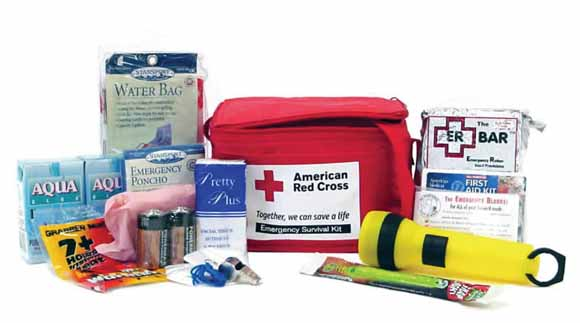

En esta sección de la aplicación se explicara el como prevenir problemas y emergencias graves en ciertas amenzas naturales por las que podríamos pasar. Además se sugieren algunos consejos, sobre todo para cuando ya nos encontramos en estado de emergencia y no se sabe que hacer para poder estar en las mejores condiciones.
Al mandar un mensaje aquí se le podrá ayudar y poner en contacto con sitios de auxilio más cercano. Además es otra alternativa para comunicar emergencias o preguntas sobre las mismas
Gran cantidad de personas llegan a ser dominadas por el pánico ante un terremoto, sin conseguir hacer nada. Si ellas no logran calmarse pueden
perder la vida. Por esto es importante la prevención de terremotos, la planificación de acciones y tareas, para evitar la crisis en el momento crucial y decisorio. Como bien sabemos, los terremotos son fenómenos naturales impredecibles, por lo que conocer, con claridad, qué hacer antes, durante y después es importante para la segur idad propia y de la familia.

Revise el estado de las instalaciones de gas, agua y sistema eléctrico. Corrija las deficiencias.
Mantenga libre de obstáculos, pasillo y puertas, y cambie de lugar objetos o muebles que le puedan lastimar o caer encima, sobre todo cerca a las camas.
Establezca, un Plan de Emergencia y Evacuación Familiar, (no necesariamente escrito). Reúnase con su familia y vecinos para planificar acciones de prevención y de respuesta.
Tenga un maletín para emergencias, de preferencia una mochila, facíl de llevar en casos de evacuación.
Coordine previamente con la administración del edificio para contar con luces de mergencia, extintores operativos, que los pasadizos de acceso a zonas de escape y que las puertas, que conduce a las escaleras de escape, se puedan abrir hacia afuera y esten libres de obstáculos, como macetas.
No utilice los ascensores para salir, busque SALIDAS DE EMERGENCIA
Acciones inmediatas después del Terremoto
Revise si el inmueble está habitable y si el suministro eléctrico, asi como las conexiones de gas y agua están en buen estado, a fin de evitar incendios o inundaciones.
Solo haga uso de su linterna. No encienda fósforos ni velas.
Para comunicarse, use mensajes de texto. Llame por teléfono solo si es necesario y por breves instantes.
Acuda al Punto de Encuentro previamente establecido, con sus hijos y familiares, una vez concluido el sismo.
Si está en zona costera, aléjese de la playa lo antes posible para evitar un eventual Tsunami.
En lo posible, evite mover personas heridas o con fracturas, sin ayuda profesional; salvo que corran peligro de lesiones mayores.
Después del Terremoto
Los especialistas aconsejan que cuando finaliza la sacudida es importante mantener el puesto elegido. Comprobar que no se tiene ninguna lesión y ayudar a otras personas que sí han tenido heridas. Después, salir del edificio o de la casa con cuidado ya que puede haber escombros u otras réplicas del terremoto. Otro consejo es utilizar las escaleras para salir del recinto.
• Además, no utilizar el gas hasta que los expertos hayan comprobado que funcionan correctamente y sin riesgos, lo mismo podemos aplicar al suministro eléctrico.
• Un detalle a tener en cuenta, y que muchos especialistas olvidan de mencionar, es que cuando el terremoto ha terminado es importante no saturar las líneas telefónicas, para que los servicios sanitarios puedan atender las urgencias.
Investigadores del todo el mundo estudian cómo prevenir los terremotos y anticiparse a los desastres que provoca. Mientras mejoran los sistemas de detección de terremotos, está en nuestras manos actuar ante estas emergencias y disminuir los daños que causan.
Prevención frente a erupción volcánica
Una erupción volcánica puede ser un acontecimiento impresionante y destructivo. A continuación se indican varios consejos para evitar el peligro y saber qué hacer si te sorprende una erupción.
Consejos de seguridad:
• Mantente alejado de volcanes activos
• Si vives cerca de un volcán activo, prepara un kit de emergencia que incluya gafas de seguridad, una máscara, una linterna y una radio en buen estado que funcione con pilas.

• Elabora una ruta de evacuación y ten el depósito de gasolina del coche siempre lleno.
• Evacua siguiendo las recomendaciones de las autoridades para no encontrarte lava y barro, así como rocas y escombros que puede arrojar el volcán.
• Evita zonas de ríos y regiones bajas.
• Antes de abandonar tu casa, ponte una camisa de manga larga y pantalones largos; usa gafas de seguridad o normales, sin lentillas. Ponte una máscara de emergencia o envuélvete la cara con un paño húmedo.
• Si no vas a evacuar, cierra puertas y ventanas, y bloquea la chimenea y otros puntos de ventilación para evitar que la ceniza entre en la casa.
Ten en cuenta que la ceniza puede sobrecargar el tejado y puedes necesitar retirarla.
• Durante la limpieza, lleva elementos de protección
• La ceniza puede dañar motores y piezas metálicas, así que evita conducir. Si debes conducir, no superes los 55 kilómetros por hora.
Prevención frente a Inundación
Cosas importantes
Proteger las cosas de valor, evitar tirar basura y colocar barricadas para que en agua no penetre en los hogares y alejarse de zonas de peligro, entre las medidas preventivas Dado que las inundaciones representan el fenómeno natural que más comúnmente se presenta en el territorio nacional, es de particular importancia estar preparados para enfrentarlas y responder adecuadamente.
Antes de la inundación
• Identifique los lugares más altos de la región, que no puedan ser inundados, así como las rutas de acceso a los refugios temporales.
• Tenga a la mano un botiquín de primeros auxilios, lámpara de mano, radio portátil y las baterías respectivas.
• Guarde sus documentos personales en una bolsa de plástico, bien cerrada para evitar su pérdida o destrucción y de ser posible proporcione a algún pariente o amigo una copia de los documentos.
• Tenga a la mano un directorio con teléfonos de emergencia.
• Evite dejar solos a los niños, personas enfermas o con discapacidades durante la época de lluvias. Si lo hace, infórmelo a algún vecino.
• En la temporada de lluvias mantenga una reserva de agua potable, alimentos enlatados y ropa en lugares bien resguardados.
• Si vive en zonas bajas, casa de palma, carrizo o adobe, es preferible refugiarse en lugares más seguros, como la escuela, la iglesia o el palacio municipal (si están fuera de peligro).
• Permanezca bien informado por las autoridades y los medios de comunicación.
• Prepare un botiquín de emergencia que incluya pomadas antimicóticas o sea para evitar hongos y gotas para los ojos.
• Cuando sea avisado de que una inundación puede afectar la zona donde usted vive, desconecte los servicios de electricidad y gas.
• Evite durante todo el año tirar basura y taladrar árboles, factores que contribuyen a las inundaciones enormemente.
• Si la evacuación de la zona es necesaria ¡Prepárese y hágalo! Lleve consigo sólo lo indispensable.
Durante la inundación
• Conserve la calma e infórmese constantemente a través de un radio portátil.
• Atienda las indicaciones de las autoridades.
• Evite caminar y cruzar por sectores o calles inundadas, sobre todo si observa que la corriente del agua es muy rápida. Aunque el nivel del agua sea bajo, puede aumentar rápidamente y desarrollar velocidades peligrosas, por lo que usted puede ser arrastrado por la corriente o golpeado por árboles, piedras o animales muertos que lleva la corriente.
• No salga ni trate de manejar a través de caminos inundados.
• Si el vehículo se atasca al intentar cruzar una corriente, debe abandonarlo inmediatamente y buscar la parte más alta en los alrededores.
• Sea precavido especialmente durante la noche, ya que es más difícil identificar el incremento del nivel del agua en el cauce.
Después de la inundación
• Pasado el peligro, manténgase informado y siga las indicaciones de las autoridades.
• Manténgase alejado de la zona de desastre. Su presencia podría entorpecer el auxilio y la asistencia para las personas que han sido afectadas.
• No regrese a la zona afectada hasta que las autoridades indiquen que no hay peligro, ni habite su casa hasta estar plenamente seguro de que las condiciones en las que se encuentra son las adecuadas.
• Evite corrientes de agua.
• No se acerque a bardas o casas en peligro de derrumbarse.
• Aléjese de lugares donde puedan ocurrir deslaves.
• No tome agua ni consuma alimentos que hayan estado en contacto directo con agua de la inundación. Utilice sus reservas de agua potable y alimentos previamente almacenados.
• No pise ni toque cables eléctricos caídos.
• Limpie inmediatamente y con cuidado las sustancias inflamables, tóxicas, medicamentos u otros materiales que se hayan derramado.
• No mueva a los heridos. Reporte a las autoridades las emergencias que lo ameriten.
• Desaloje el agua que haya quedado estancada para evitar plaga de mosquitos, si tiene rocíe plaguicidas.
• Acuda a los centros de salud para ser vacunado y que le apliquen lo necesario en caso de problemas de la piel, ojos u otras enfermedades respiratorias y gastrointestinales.
Prevención frente a Huracanes
Medidas de Prevención ante la llegada de huracanes
Antes de que inicie la temporada de huracanes
Planee una ruta de evacuación.
Póngase en contacto con la oficina de manejo de emergencias local o el capítulo de la Cruz Roja, y pregunte por el plan de preparación para huracanes de la comunidad. Este plan debe incluir información acerca de las rutas de evacuación más seguras y los refugios cercanos.
Familiarícese con las rutas seguras tierra adentro.
Prepárese para conducir de 20 a 50 km tierra adentro para localizar un lugar seguro.
Tenga a la mano suministros para casos de desastre.
Linterna y pilas adicionales.
Radio portátil, operado con pilas, y pilas adicionales.
Botiquín y manual de primeros auxilios.
Alimentos y agua de emergencia.
Abrelatas no eléctrico.
Medicamentos esenciales.
Dinero en efectivo y tarjetas de crédito.
Ropa abrigadora.
Zapatos resistentes.
Asegúrese de que todos los miembros de la familia sepan cómo reaccionar después de un huracán.
Enseñe a los miembros de la familia cómo y cuándo desconectar el gas, la electricidad y el suministro de agua.
Enseñe a los niños cómo y cuándo llamar a los servicios de emergencia, la policía o departamento de bomberos y qué estación de radio sintonizar para oír información de emergencia.
Proteja sus ventanas.
Las contraventanas permanentes son la mejor protección. Un método más barato consiste en colocar paneles de madera contrachapada. Use tablones de madera de 1/2 pulgada corte a la medida de cada ventana.
Perfore agujeros cada 40 cm para los tornillos. Haga esto mucho antes de que llegue la tormenta.
Pode o corte las ramas muertas o débiles de los árboles.
Verifique que la póliza de seguros se encuentra vigente (completamente pagada o sin retrasos en pagos fraccionados), que las coberturas contratadas incluye riesgos hidrometereológicos (riesgos de inundación y/o huracán), que las sumas aseguradas están acorde con el valor del bien inmueble y contenidos.
Elabore un plan de comunicación de emergencia.
En caso de que los miembros de la familia se separen unos de otros durante un desastre (una posibilidad real durante el día cuando los adultos se encuentran en el trabajo y los niños en la escuela), tenga un plan para volver a reunirse.
Pida a un pariente o amigo que viva fuera del estado que actúe como el "contacto de la familia". Después de un desastre, a menudo es más fácil hacer llamadas de larga distancia.
Asegúrese de que todos en la familia sepan el nombre, dirección y teléfono de la persona de contacto.
Prevención frente Tormentas Eléctricas
Como el rayo tiende a ir sobre cualquier objeto elevado, ya sea un edificio o un árbol, en virtud de que las cargas eléctricas se acumulan en los puntos más altos, la mejor protección la constituyen "los pararrayos", a continuación citamos algunas recomendaciones dadas por el Instituto Meteorológico Nacional:
No refugiarse debajo de un árbol aislado. La humedad y la altura aumentan la intensidad del campo eléctrico y atraen la carga. Los árboles que forman bosques son menos de temer porque aumentan las posibilidades de que la chispa eléctrica caiga lejos.
En caso de encontrarse en pleno campo, no correr para escapar de la tormenta. Es muy peligroso. Si la tormenta eléctrica es muy intensa no hay ningún inconveniente en colocarse horizontal sobre la tierra, que reduce al máximo el riesgo de ser alcanzados por el rayo.
En las casas fuera de la ciudad, cierre puertas y ventanas. No camine sobre suelos húmedos o con calzado mojado.
Evite permanecer en lo alto de las colinas; busque refugio en lugares bajos, pero no en quebradas o ríos
No salga a la puerta ni tenga las ventanas abiertas.
No manejar herramientas ni objetos metálicos durante la tormenta.
No tener contacto con el agua, por ejemplo cuando se está en la playa o cerca de un río o un lago. La salinidad del agua permite que toda la intensidad de la descarga eléctrica produzca efectos fatales.
Alejarse de las verjas metálicas o vallas. Estas podrían causar la muerte aun sin hallarse en contacto con ellas. Por tal motivo, se recomienda alejarse de toda clase de maquinaria, vehículos y herramientas.
Dentro de la casa, la máxima seguridad se encuentra sobre la cama, principalmente si es de madera.
Durante la tormenta no utilice artefactos eléctricos; use el teléfono solo en una emergencia.
En lugares abiertos no use paraguas con punta de metal.
Los vehículos constituyen un buen refugio; se debe quedar dentro del automóvil.
Los edificios grandes como escuelas y otros similares, son seguros.
Consejos Prácticos
Kit de Emergencia
Agua: considera dos litros por persona al día (incluye botellas chicas que son más fáciles de trasladar).
Comida: enlatada, barras energéticas y comida deshidratada.
Abrelatas manual.
Linternas y baterías.
Radio portátil con baterías adicionales.
Botiquín de primeros auxilios.
Ítemes especiales: medicamentos y anteojos. Considera las necesidades de niños, tercera edad y discapacitados.
Llaves de repuesto de tu casa y de tu auto.
Dinero en efectivo.
Copia del Plan de Emergencia.
Provisiones Adicionales
Dos litros adicionales de agua por día.
Velas, encendedores o fósforos.
Una muda de ropa y zapatos (para cada miembro de la familia).
Saco de dormir o una frazada (para cada miembro de la familia).